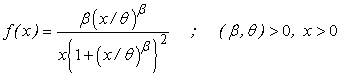

![[loglogistic_ex0]](loglogistic_ex0.bmp) Log-Logistic Model
Log-Logistic Model

model
{
for( i in 1 : N )
{
x[i] ~ dlog.logis(beta, theta)
}
# Prior distributions of the model parameters
beta ~ dunif(0.1, 10.0)
theta~ dunif(0.1, 10.0)
}
The 40 observations are generated from Log-logistic distribution with beta=3.0 and theta = 5.0
The MLEs are beta.mle= 2.97937, theta.mle= 4.82757
Data ( click to open )
Inits for chain 1 Inits for chain 2 ( click to open )
Results
![[loglogistic_ex3]](loglogistic_ex3.bmp)